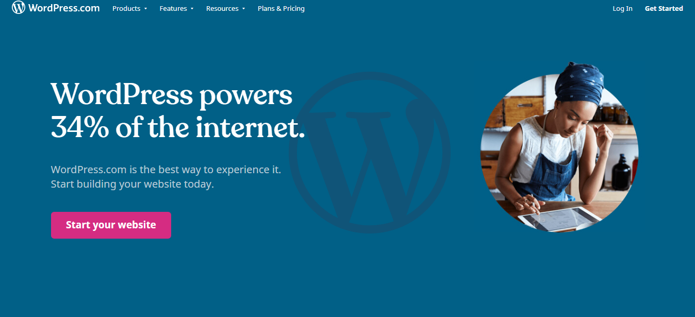

5 Website Builders That Actuall Works !
By Immanuel on November 15, 2019 | Category | Website Builder | Create A Website With Website Builder Tools | 30 Comments | Views (105)
Top 5 Website Builders That Actuall Works !
Website builders can be a good choice for people who are short on budget or people with less to spend on a web developer. Using a website builder is one of the quickest ways to set up your website. Though many platforms provide simple, drag and drop tools that make creating a website simple and straightforward, not all website builders platforms are equal. Some are more reliable than others while some more flexible than others.
What Is A Website Builder Tool?
Website builders are tools that typically allow the construction of websites without manual code editing.
Advantages of Using a Website Builder Tool
- Templates Flexibility. You do not need to be a website designer or graphic designer to create an attractive website.
- Reduced Cost. Helps build Professional websites without hiring a Professional developer. Website Builder tools help build Professional Websites which is a good investment, especially if you plan to use your site for business purposes.
- Reduced Time.
- Stock Images.
- Drag-and-Drop Design.
Disadvantages of Using a Website Builder Tool
- Limited Mobile Experience.
- The Website Doesn't Quite Look “Right”.
- Ease-of-Use.
- Cookie-Cutter Template Selection.
- Missing Key Search Engine Optimization (SEO) Elements
Website Builders Are Best For:
Website builders are the ideal solution for individuals or small businesses with low budgets. Just to name them:
- Small business owners
- Freelancers
- Writers
- Artists
- Musicians
- Bloggers
- Photographers
Take advantage of our master picks to compare the leading web hosting site builders and platforms available today. Learn about each company's marketing offers, free trials and much more.

1. Wix.com – Easy to Use Website Builder for Small Business
- 500+ stunning templates
- Support: 24/7 chat, help centre
- Create your domain name
If you’re considering about using this builder for your next website, then here are some of the vital pros and cons of WIX to consider before you get started.
Pros Of Wix Websites
1. Free to use for everyone
Wix website builder platform is free to use for everyone. It means anyone with basic computer and internet knowledge can use it anytime and anywhere on any device, within their web browser.
2. Improved design templates.
The templates are designed by top quality and ranked graphics designers. So you don’t need to worry about designs, layouts, responsiveness and website structure. With the drag-and-drop design functions that Wix offers, you can have a stylish website created in any minutes. This enables individuals or business to get online with a commercial or personal site without a large investment. Some of the templates are limited with the free plan, but otherwise, you receive an immediate and solid user experience.
3. The interface is inherent and useful.
It isn’t the best looking backend interface that you’ll find with a website builder today, but it is incredibly useful. All of the tools you need are a few clicks away. You also get guidelines and tools to customize templates, even on the free plan, so your website can match the look of your brand.
4. You’re not locked into long-term plans.
To get an affordable premium plan, many website builders lock you into 24-36 month contracts. You don’t have that issue with Wix. If you want to upgrade from the free option, you can try it out for as little as $5 per month and cancel at any time.
5. Site security without compromising speed.
Wix websites perform at above-average rates for speed. You don’t need to worry about security because the site is hosted on a Wix server. This means you get to worry more about designing your site and taking advantage of the services you may have purchased from their numerous premium bundles.
6. You receive an all-in-one solution.
If you run into a problem with your site for some reason, all you need to do is contact Wix to get the solution you need. There’s no time spent tracking down issues or trying to deal with plugins or widgets that may have malfunctioned. You can contact their customer service depart via email, phone, or what amounts to an interactive FAQ page.
Cons Of Wix
1. Cannot support complex substructures.
Not perfect for large business websites (more than 30 pages), because the navigation menu cannot support complex substructures. So the depth of navigation is only two levels deep.
2. The starter plan doesn’t remove ads from your site.
In the free version, you can’t access all the functionality and features. Such as if you want to access all the good design elements, or if you want your domain without Wix ads. To remove the ads, you must go to a different monthly plan that will cost more than most of the website building competitors that are out there right now.
3. Drag and drop designs can limit your creativity.
You can’t create your own designs ideas. For example, if you want different designs with various unique user experiences it’s not easy to do in Wix. Starting with Wix is easy but once done its hard to give it a bespoke touch. Although the website builder has advanced dramatically in the last couple of years, you still have certain constraints. You can drag and drop items anywhere instead of into locked boxes, but it still can be a trouble to get a design to look and work the way expected. It takes much more time, in reality, to design a site on Wix than most people will think it does.
4. Lack of total control and advanced features
It’s difficult to customize everything. Sure they have provided drag and drop functionality but making significant changes to an existing site can be a hassle on Wix. Also, Wix changes the image file name after encryption, which can be a limitation in terms of Image searchability.
5. SEO is hard with Wix.
You do have access to an SEO Wizard with Wix that can help you maximize content optimization, but the techniques offered are a little behind the times. Most of the focus is on keyword targeting, grouping, and ranking without any consideration of other aspects of modern SEO. It may not be a deal-breaker, but it will be a disadvantage to those who are looking at a long-term website effort.
Recommended? YES.
Wix was one of the easiest site builders we have ever tested. And yet, it’s simple to use, fast and reliable.
2.Squarespace
Squarespace provides a hosting server (where your website files live) along with custom software so that you can design & edit your website files yourself. When you get started, you get an account and a website builder dashboard to create your website design, pages, and media that you can "publish" to a website that has a custom domain.
- Award-winning website templates
If you’re thinking about using this builder for your next website, then here are some of the essential pros and cons of Squarespace to consider before you get started.
Pros of Squarespace
1. Offers Templates and Design that are ready for publication.
Compared to other popular platforms, Squarespace has several templates. But all of these are of the highest quality. They offer more than 100+ advanced templates that are optimized for tablets and phones. Their templates are also highly customizable through the mobile site menu. Squarespace allows you to upload your design if you prefer.
2. Mobile-Friendly Site
No matter what changes you make in the design and layout of the site, it will automatically adjust with the screen size of the user’s device. All Squarespace sites are responsive, which is very important for SEO purposes these days.
3. Technical Aspects and Customer support are always available with Squarespace
Squarespace looks after all the technical aspects of your site. From hosting to security and software updates, everything is taken care of by Squarespace. You don’t have to worry about your site getting hacked or any other technical aspects. You can just focus on building your site. You receive 24/7 support through email tickets and live chat boxes on this platform.
Cons Of Squarespace
1. Expensive Plans
Squarespace is a bit more pricey. However, if you have the budget and if it is not for some serious business, I would say go for it. It’s deserving. If the site grows with passing time and you feel Squarespace is not providing you with what you need (yes, you might feel that way, especially because of the restricted scope of adding external functionalities), you can always export your site to WordPress.
2. No Free Plan
Unlike most of the other website builders, there is no free plan on Squarespace. There is a 14-day trial period after which you will have to upgrade to a paid plan.
3. Lack of advanced marketing tools.
People don’t just show up to your website because you’ve published it. They need to know about it. Squarespace gives you all of the basics for marketing, including the all-important share buttons, but the advanced tools are lacking at best. You do have URL redirect options, but SEO is pretty lacking and limited to basic meta structure.
Recommended?
I feel if you can afford it, you can go for it. It is particularly good for storytellers, photographers, and artists. It is also a good option for small businesses. However, I won’t suggest it for large e-commerce sites.
3. WordPress.com
Pros Of Wordpress.com
1. Free to Use
You don’t need to purchase a domain name or web hosting. WordPress.com provides a free subdomain and hosts your site’s data for you at no extra cost. It also provides 3GB of free space.
2. Easy to Set Up
All you have to do to start using WordPress.com is to create an account and give your site and URL a name.
3. Easy Maintenance
You don’t have to handle things like updates or backups since WordPress.com handles that for you.
Cons Of Wordpress.com
1. Ad Displays
All free WordPress.com websites have ads displayed on them. This means your site visitors see these ads. You also don’t make money off these ads. To get rid of the ads displaying on your site, you must upgrade to a premium plan.
2. No Site Identity
With the free WordPress.com platform, you are not allowed to have a custom domain name.
You can set up a free subdomain to get around this, but the URL is often long and hard for site visitors to identify.
Your free WordPress.com URL will look like this: http://yoursite.wordpress.com/
This tells everyone you’re using the free WordPress platform and can appear unprofessional.
It also restricts your ability to represent your brand and establish an identity.
Your site will display a powered by WordPress link that can only be removed by
upgrading to the premium Business plan.
And to top it off, you do not own your website like you do when you use WordPress.org.
If at any time they feel you’ve violated the Terms of Service, they can delete your entire site.
3. No Monetization
You are not allowed to sell direct ads on your website or use ad networks like Google AdSense. You can apply for the WordAds program, but any revenue you generate will be shared with WordPress. If you use the Premium or Business plans you can use WordAds right away. Also, you cannot participate in or make money from affiliate links when you use the free plan.
4. Limited Customization
With WordPress.com, you cannot install any custom themes on your site. Instead, you are limited to the few free themes available. The Premium plan and higher provide access to premium themes. They can also use custom CSS.
5. No Plugins
Just as you can’t use themes on your free WordPress site, you can’t install plugins either. Though all WordPress.com sites do come with Jetpack vital features, that’s it unless you pay more.
Recommended ?
It gives you a chance to start a website for free. And if you find you need more features like custom domain name support, more storage space, or custom designs, you can upgrade from your free plan to a premium WordPress.com plan.
4.Sitebuilder.com
Sitebuilder.com is one of the faster-growing brands in the fast-growing website builder space. SiteBuilder focuses on core features and a clean interface.
- Customizable templates
- Free hosting
- Support: 24/7 phone, chat, email
Pros of SiteBuilder
- Free domain with each paid plan
- Has a fully functional blog feature that is better than what most website builders offer.
- No coding or web development skills are required
- Free email account with any of the following plans: Pro, Premium, eCommerce
- The editor is one of the best: user-friendly and easy to design
- Pricing is affordable and competitive to other website builders
- Over 10,000 responsive templates to choose from
- Effective SEO tools to help your website rank high on search engines
Cons of SiteBuilder
- There is no option to export data
- Several customers have lamented on bad customer support regarding billing issues.
- The free plan has ads displayed on the website and does not allow you to connect your domain. This may look very inadequate.
- No mobile app available
- No App Market or any way of adding third-party applications to your website
Recommended ?
SiteBuilder is overall a good choice for anyone desiring to build a website quickly and affordably. Their most effective selling points would be how easy their editor is to use and the fact that you get a free domain with any paid plan.
5.Jimdo
Jimdo is a web hosting service, owned and operated by Jimdo GmbH, that allows users to build their website. It gives users with a WYSIWYG (what-you-see-is-what-you-get) web authoring tool, so users do not need to know HTML language to create a website.
Jimdo is a website-builder and all-in-one hosting solution, designed to enable users to build their websites without any web design experience.
Pro Of Jimdo
1. Ease of use
The editor is made for complete beginners. Adding and editing elements can be done with a few clicks. The style menu is a great visual tool for site-wide changes like font size or colours. This is a huge timesaver and makes editing straightforward.
2. SEO
Optimizing your website for search engines is one of Jimdo’s big strengths. The backend gives you full control over page elements such as the page title, description and URL. Also, they use SSL-encryption, which is a ranking factor for search engines. If that’s not enough, Jimdo’s paid Ranking Coach tool can further help you understand SEO.
3. Mobile App
Jimdo’s app is one of the best in the market in terms of creating a website with a tablet or mobile phone. It’s available for both Android and iOS.
4. Great support
Jimdo scored high marks with the quality of their answers. They are not always the fastest but will typically resolve your issues right away.
Cons Of Jimdo
1. Lack Of templates Flexibility
Sometimes you just want to move things around. However, due to some template restrictions, this is not always easy (or, in some cases, even possible).
2. Online store
Even though Jimdo has a pretty decent integrated online store, unfortunately, it’s not the best choice for US-sellers. The problem is that there’s no credit card gateway available. Currently, you can only offer manual payments or PayPal.
Recommended?
Jimdo provides a Web hosting service that presents everything you need to make your website. You can make anything from a business site or blog to an eCommerce store – all without having to use code!
In Conclusion
Website builder tools have truly advanced over the past few years and it’s good if your purpose is to build a personal site, unfunded startup, small non-profit, small community, unproven concept etc. In-short Website builders are awesome if you need to build static pages, plus galleries, forms, testimonials etc & that you don’t care much about cutting-edge SEO at present. If you are planning a larger site with complex site architecture and connect with the database then building a custom website of using the CMS platforms such as WordPress, Joomla, Drupal and so on will be the correct alternative.
Read on Our guidelines on Top Content Management Systems
Comments